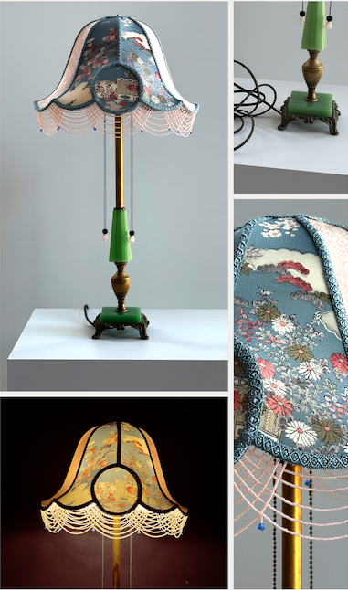

| Lamp: Bronze and Brass Bridge Floor Lamp Shade: Pink and Green Silk |
Lamp: Cast Iron Bridge Floor Lamp Shade: Gold Silk with Cut Outs with Vintage Bead Trim |
Lamp: Uranium Glass Floor Lamp Shade: Blue Velvet with Czech Glass Beadwork |
|---|---|---|

|

|

|
| Lamp: Jadeite and Uranium Glass Floor Lamp Shade: Champagne and Blue Silk |
Lamp: Uranium Table Floor Lamp Shade: Hand-printed Champagne Silk with Czech Glass Beadwork |
Lamp: Lamp: Jadeite Glass Table Lamp Shade: Vintage Blue and Pink Silk with Czech Glass Beadwork |

|

|
 |
| Lamp: Jadeite and Bakelite Lamp Shade: Pink Silk with Czech Glass Beadwork |
Lamp: Jadeite, Bronze, and Brass Double Candlestick Lamp Shade: Czech Glass Bead Shades |
Lamp: Brass Edwardian Sconces Shades: Amber-colored Czech glass bulb covers |